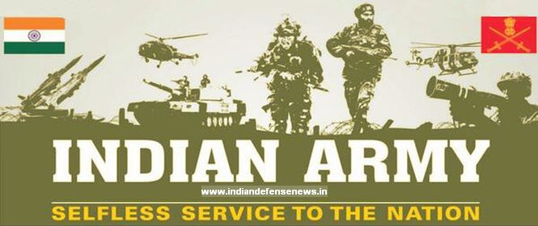
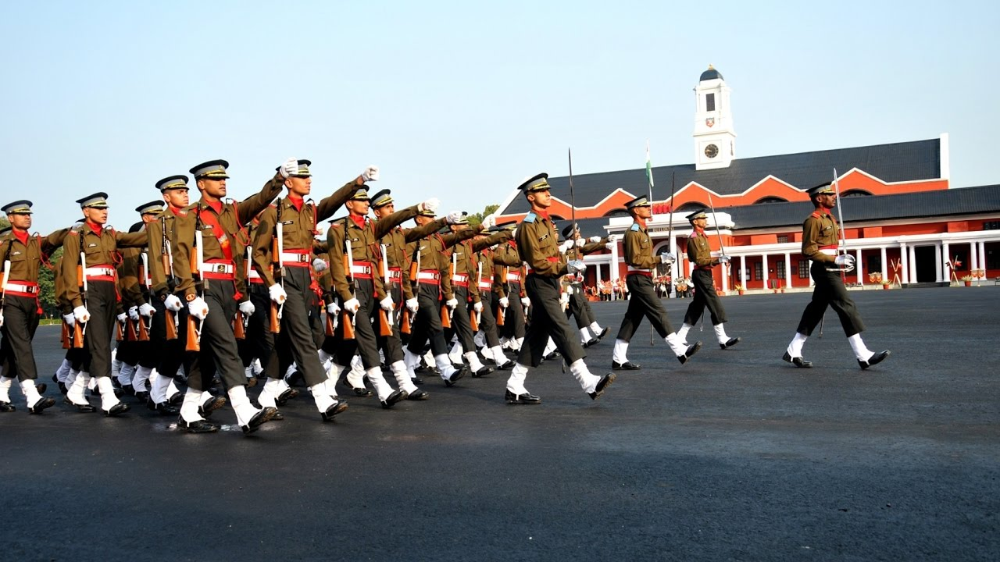
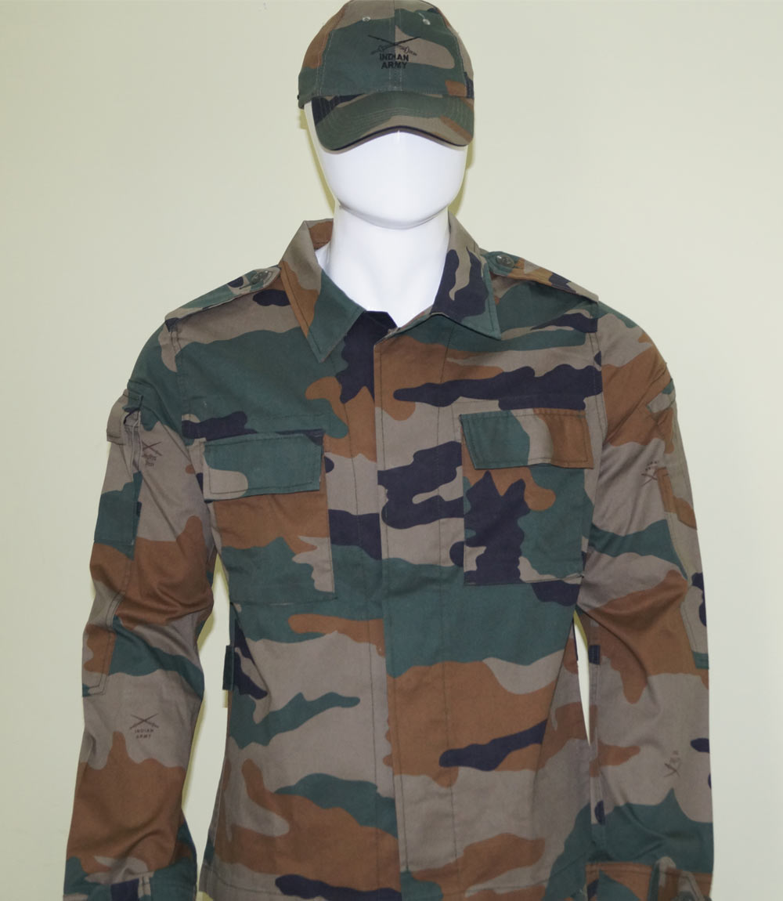

437-213-6867
kaurjagmeet1311@gmail.com.com

INDIAN ARMY
The Indian Army is the land-based branch and the largest component of the Indian Armed Forces.
The President of India is the Supreme Commander of the Indian Army, and it is commanded by the Chief of Army Staff (COAS), who is a four-star general.
The primary mission of the Indian Army is to ensure national security and national unity, defending the nation from external aggression and internal threats, and maintaining peace and security within its borders.
It conducts humanitarian rescue operations during natural calamities and other disturbances.
The army has been involved in four wars with neighboring Pakistan and one with China.
Other major operations undertaken by the army include: Operation Vijay, Operation Meghdoot and Operation Cactus.
The primary mission of the Indian Army is to ensure national security and national unity, defending the nation from external aggression and internal threats, and maintaining peace and security within its borders. It conducts humanitarian rescue operations during natural calamities and other disturbances, like Operation Surya Hope, and can also be requisitioned by the government to cope with internal threats.
It is a major component of national power alongside the Indian Navy and the Indian Air Force. The army has been involved in four wars with neighbouring Pakistan and one with China. Other major operations undertaken by the army include: Operation Vijay, Operation Meghdoot and Operation Cactus. Apart from conflicts, the army has conducted large peace time exercises like Operation Brasstacks and Exercise Shoorveer,
and it has also been an active participant in numerous United Nations peacekeeping missions including those in: Cyprus, Lebanon, Congo, Angola, Cambodia, Vietnam, Namibia, El Salvador, Liberia, Mozambique, South Sudan and Somalia.
The Indian Army has a regimental system, but is operationally and geographically divided into seven commands, with the basic field formation being a division.
It is an all-volunteer force and comprises more than 80% of the country's active defence personnel. It is the 2nd largest standing army in the world, with 1,237,117 active troops and 960,000 reserve troops. The army has embarked on an infantry modernisation program known as Futuristic Infantry Soldier As a System (F-INSAS),
and is also upgrading and acquiring new assets for its armoured, artillery and aviation branches.
Indian Army is mandated to safeguard National Interests from External Aggression and Internal Subversion.
The tasks performed by Indian Army are as follows:
- War fighting to meet External Aggression.
- Internal Security Management to include Internal Threats.
- Force projection.
- Peace Keeping Operations or Military Assistance to friendly foreign countries
- Render Humanitarian Assistance, Disaster Relief and Aid to Civil Authorities.
Rank Structure
The ranks of the Indian Army for the most part follow the British Army tradition.
Rank of the Indian Army - Officer Ranks

Ranks of the Indian Army - JCOs and Other Ranks

Uniforms

The Indian Army camouflage consists of shirts, trousers and cap of a synthetic material. Shirts are buttoned up with two chest pockets with buttoned up flaps. Trousers have two pockets, two thigh box pockets and a back pocket. The Indian Army Jungle camouflage dress features a jungle camouflage pattern and is designed for use in woodland environments.
The Indian Army Desert camouflage, which features a desert camouflage pattern, is used by artillery and infantry posted in dusty, semi-desert and desert areas of Rajasthan and its vicinity.
The forces of the East India Company in India were forced by casualties to dye their white summer tunics to neutral tones, initially a tan called khaki (from the Hindi word for "dusty"). This was a temporary measure which became standard in the Indian service in the 1880s. Only during the Second Boer War in 1902, did the entire British Army standardise on dun for Service Dress. The Indian Army uniform standardises on dun for khaki. The modern Indian Army wears distinctive parade uniforms characterised by variegated turbans and waist-sashes in regimental colours. The Gurkha and Garwhal Rifles and the Assam, Kumaon and Naga Regiments wear broad brimmed hats of traditional style. Traditionally, all rifle regiments (the Jammu and Kashmir Rifles, the Garhwal Rifles, all Gorkha Rifles, and the Rajputana Rifles) as well as the Jammu and Kashmir Light Infantry wear rank badges,
buttons and blackened wire embroidered articles of uniform in black instead of the usual brass (or gold) colour as the original role of the rifle regiments was camouflage and concealment.
The Combat Edge
ndian Army consists of different corps and departments (in civilian language) which combine together to form the efficient and fabulous union we see. There are several back processes running in the successful execution of anything. Army being no different has several small parts which integrate to form the family of Army, each part has the importance of its own and is a non-differentiable part of the family. Let us have a look inside the Combat Edge of our Army
- THE ARMOURED CORPS
- THE INFANTRY
- ARTILLERY
- MECHANISED INFANTRY
- THE RASHTRIYA RIFLES
- THE ARMY MEDICAL CORPS
The Armoured Corps ethos reflects professional competence and makes demands on individual soldiers far beyond those necessary in other vocations.
The Indian Armoured Corp's operational success continues to be founded on moral strength and martial spirit, and it takes tremendous pride in the achievements of the past, seizes the demands and opportunities of the present, and focuses always on the challenges of the future.
Infantry has been the foremost fighting arm from the days of yore. History is testimony to the fact that the ultimate victory in any war is decided by the Infantry.
It is the infantryman who pushes the enemy out of his bunker and forces him to accept defeat; or, resolutely holds ground against the assaults of the enemy till the "last man last round".
The Regiment of Artillery is the second largest arm of the Indian Army, constituting nearly one sixth of the Army's total strength.
Originally raised in 1935 as part of the Royal Indian Artillery of the British Indian Army, the Regiment is now tasked with providing the Army's towed and self-propelled field artillery, including guns, howitzers, heavy mortars, rockets and missiles.
As an integral part of nearly all combat operations conducted by the Indian Army, the Regiment of Artillery has a history of being a major contributor to Indian military success. During the Kargil War, it was the Indian Artillery that inflicted the most damage.
Over the years, five artillery officers have gone on to the Army's highest post as Chief of Army Staff of the Indian Army.For some time, the Regiment of Artillery commanded a significantly larger share of the Army's personnel than it does now, as it was also responsible for air defense artillery and some aviation assets. The 1990s saw the formation of the Corps of Army Air Defence and the coalescing of all aviation assets into the Army Aviation Corps. The arm is now focused on field artillery, and supplies regiments and batteries to each of the operational commands. The home of the Regiment is in Nashik, Maharashtra, where their headquarters is located along with the service's museum. The School of Artillery of the Indian Army is located nearby in Devlali.
After undergoing consistent failures to import or produce modern artillery for three decades, the Regiment of Artillery is finally going ahead with procurement of brand new 130-mm and 150-mm artillery guns.[133][134][135] The Army is also putting large numbers of rocket launchers into service,
with the indigenously-developed Pinaka multi barrel rocket launcher to equip 22 regiments by the end of the next decade
The Mechanised Infantry is the youngest regiment of the Indian Army and is a unique blend of military heritage originating since 1776 and the latest state of the art equipment profile. In 1977-78 Mechanised Infantry units were equipped with BMP-1 Infantry Combat Vehicles (ICVs).
To fulfil the requirement of the common battle and training philosophy of mechanised warfare, the Mechanised Infantry Regiment was raised on 02 April 1979.Upon its inception, the Indian Army inherited the British Army's organisational structure, which is still maintained today. Therefore, like its predecessor, an Indian infantry regiment's responsibility is not to undertake field operations but to provide battalions and well trained personnel to the field formations. As such it is common to find battalions of the same regiment spread across several brigades, divisions, corps, commands, and even theatres. Like its British and Commonwealth counterparts, troops enlisted within the regiment are immensely loyal, take great pride in the regiment to which they are assigned, and generally spend their entire career within the regiment.
Most Indian Army infantry regiments recruit based on certain selection criteria, such as on the basis of region (for example, the Assam Regiment), caste/community (Jat Regiment), or religion (Sikh Regiment). Most regiments continue the heritage of regiments raised under the British Raj, but some have been raised after independence.
Some regiments raised after independence have specialised in border defence, in particular the Ladakh Scouts, the Arunachal Scouts and the Sikkim Scouts.
Over the years there have been fears that troops' allegiance lay more with their regiments and the regions/castes/communities/religions from which they were recruited, as opposed to the union of India as a whole. Thus some "all India" or "all class" regiments have been created that recruit troops from all over India regardless of region, caste/community or religion, such as the Brigade of the Guards
(which later converted to the Mechanised Infantry profile) and the Parachute Regimen
Rashtriya Rifles is a specialist elite force raised in 1990 to combat insurgency in the country and is the premier counter insurgency force of the Army, today.
Rashtriya Rifles adopts a relentless approach with human touch in the execution of tasks, true to its motto of DRIDTA AUR VEERTA which means Determination and Valour.
The Indian Army promises both professional and personal growth at every stage of the career. Opportunities to excel through various courses are abundant including opportunities to enhance your educational qualification by availing two years paid study leave. The inherent adventure and extra-curricular activities in the Army ensure an all round development essential in today's world. Art of War-Engineering-Medicine-Administration-Human Resource Development and Management; the army teaches you all.
Moulding the officers into leaders capable of leading from the front in any field. Joining the Army is possible both after finishing school as well as after graduation.
Apart from attractive pay and perks, Army offers you the best in Life Style, better than all other professions. Be it social interaction, finest clubs, sports facilities, medical facilities and ample opportunities, Army has it all. In fact you are paid to lead a healthy life in a healthy environment.
Facilities like subsidized housing, free medical for self & family, canteen facilities, group insurance cover, soft loans for house and/or vehicle and above all the feeling of belonging to a family which cares for you, are the perks of the Army which no other organization provides.
Go to top